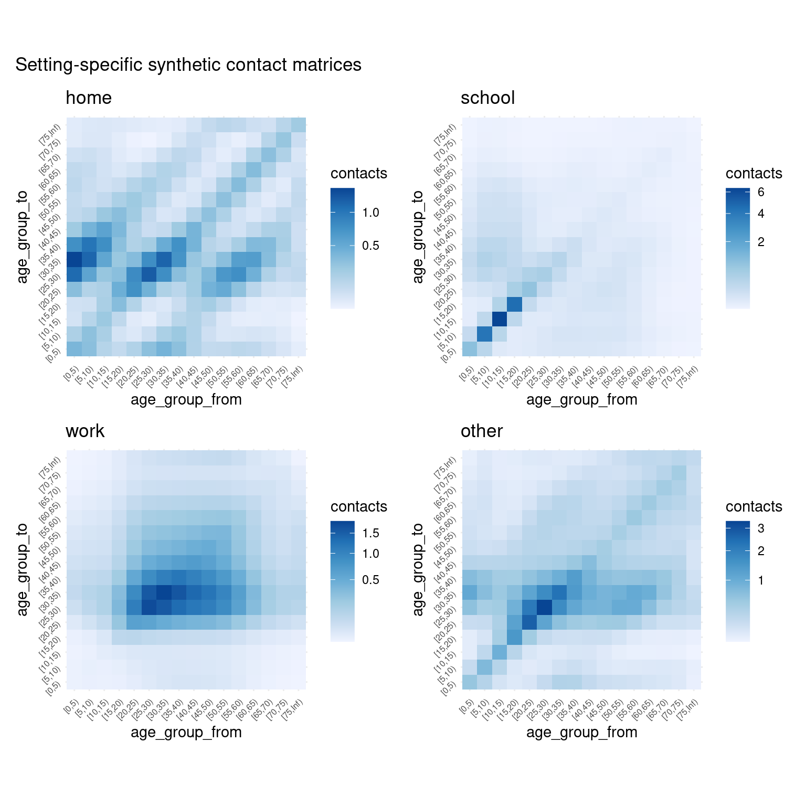

Visualisation gallery
visualising-conmat.Rmd
library(conmat)
library(tidyverse)
#> ── Attaching packages ─────────────────────────────────────── tidyverse 1.3.2 ──
#> ✔ ggplot2 3.4.0 ✔ purrr 1.0.0
#> ✔ tibble 3.1.8 ✔ dplyr 1.0.10
#> ✔ tidyr 1.2.1 ✔ stringr 1.5.0
#> ✔ readr 2.1.3 ✔ forcats 0.5.2
#> ── Conflicts ────────────────────────────────────────── tidyverse_conflicts() ──
#> ✖ dplyr::filter() masks stats::filter()
#> ✖ dplyr::lag() masks stats::lag()This vignette will contain various visualisations that you can
perform with conmat. For the most part we have tried to
make autoplot work for most of the matrix type objects. As
time goes on we will include other visualisations here.
extrapolate polymod
perth <- abs_age_lga("Perth (C)")
perth_contact <- extrapolate_polymod(
perth
)
autoplot(perth_contact)
For interest’s sake: visualising the empirical contact rate data
# visualise empirical contact rate estimates
bind_rows(
home = get_polymod_contact_data("home"),
school = get_polymod_contact_data("school"),
work = get_polymod_contact_data("work"),
other = get_polymod_contact_data("other"),
.id = "setting"
) %>%
mutate(
rate = contacts / participants,
setting = factor(
setting,
levels = c(
"home", "school", "work", "other"
)
)
) %>%
group_by(
setting
) %>%
mutate(
`relative contact rate` = rate / max(rate)
) %>%
ungroup() %>%
ggplot(
aes(
x = age_from,
y = age_to,
fill = `relative contact rate`
)
) +
facet_wrap(
~setting,
ncol = 2,
scales = "free"
) +
geom_tile() +
scale_fill_distiller(
direction = 1,
trans = "sqrt"
) +
theme_minimal()